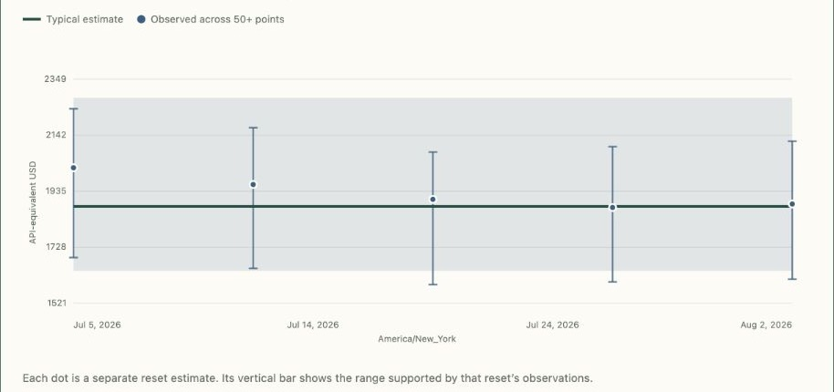

Install the Mac app
Open TiboTattle and let it calculate your Codex usage locally.
TiboTattle is a private Mac app that estimates how much of your seven-day Codex allowance remains and shows how your usage changes over time. Your personal dashboard is calculated on your Mac.
Latest community evidence Checking daily activitySeven-day allowance estimate
Example only — not your usage or a bill.

Open TiboTattle and let it calculate your Codex usage locally.
View your allowance estimate and history in the app.
Review a content-free summary before any optional community contribution.
When available, this leads with the fitted seven-day Codex allowance in API-price-equivalent dollars across every contributing account on the Codex Pro (20x) plan, from delayed, anonymous contributions. Other plan cohorts are never mixed into this series. The daily activity series sits below. A late contribution never edits history: it publishes a replacement revision for its day.
Personal dashboards and contributions stay in the Mac app.
Checking for published daily activity…
Central fit, plausible range, and per-day estimates across contributing accounts on the Codex Pro (20x) plan, valued at API prices.
Checking for published allowance estimates…
Delayed daily totals for the past year. Each day shows its latest published revision.
Checking for published daily activity…